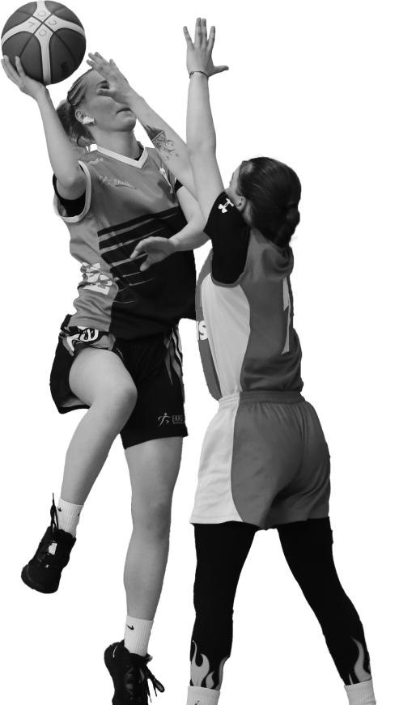
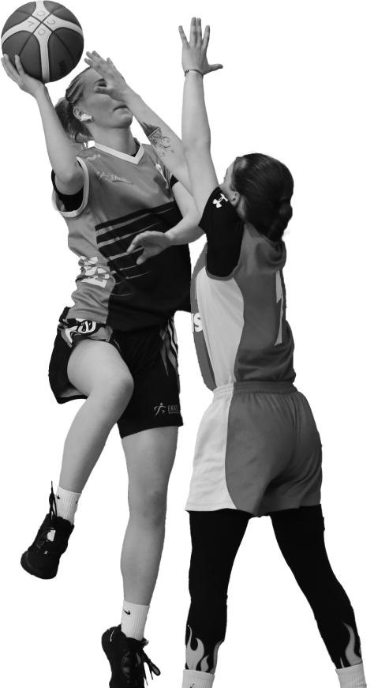

The Baltic States - Estonian, Latvian and Lithuanian - sports games in vocational
education aim is to
promote the growth of athletic results as well as to strengthen the
friendship between the young
people, educators, educational institutions and the management.
Instructions for Baltic Games
2024-2027 can be found HERE
25-27 April 2024
United By Skills
Just For The Thrill Of It
XXIX Baltic Games for Vocational Schools take place in April 2024. Athletes from
Estonia,
Latvia, and
Lithuania compete in basketball, volleyball, and table tennis. Proudly
presented by
the Estonian Vocational School Sports Federation in partnership with VOCO.
Join the celebration of Baltic talent and sportsmanship
Join the celebration of Baltic talent and sportsmanship